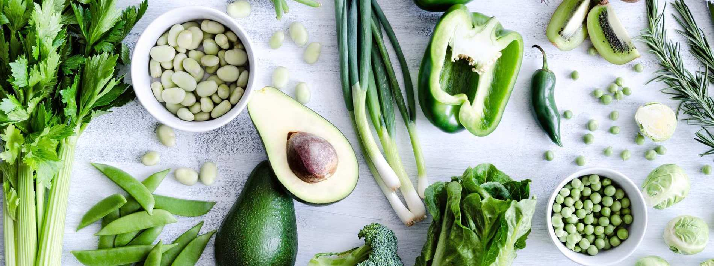

Vitamin K
Vitamin K je rastvorljiv u mastima i deluje u jetri. Utiče na sintezu proteina za koagulaciju krvi. To je vitamin koji sprečava krvarenje. Njegov nedostatak zapaža se samo u slučajevima nekih bolesti digestivnog trakta ili kod prerano rođenih beba.
Izvori
Postoje dva izvora vitamina K:
Crvene bakterije proizvode količinu dovoljnu za dnevne potrebe. Jake doze antibiotika ili dugog lečenja antibioticima mogu uništiti deo ovih "prijateljskih" bakterija koje nam se nalaze u crevima i dovesti do nedostatka tog vitamina.
Namirnice, posebno povrće kao što su repa i kupus.
| Vitamin E | ||
|---|---|---|
| Namirnica | Količina u mg/100 g | Količina namirnica u g koja obezbeđuje preporučenih 70 mg dnevno |
| Listovi repe | 470 | 15 |
| Kelj | 360 | 19 |
| Kupus | 90 | 78 |
| Teleća džigerica | 86 | 81 |
| Zelena salata | 35 | 200 |
| Sir | 33 | 212 |
| Spanać | 25 | 280 |
| Grašak | 15 | 467 |
| Mleko | 3,5 | 2000 |